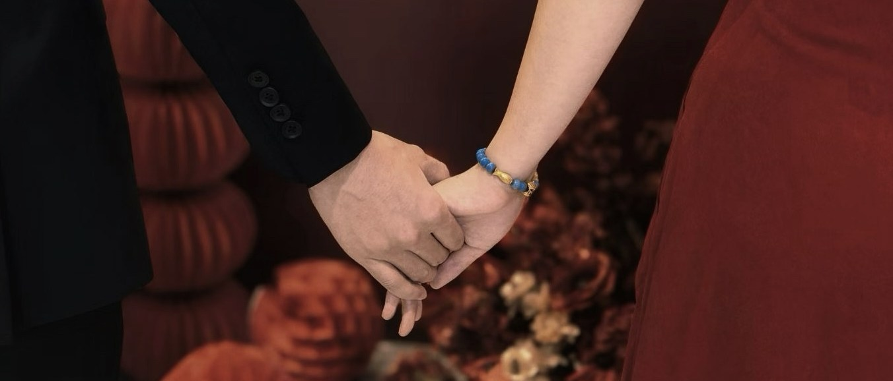

现在这个页面上全是执行信息：流程、人员、车辆、清单、场地。都不是“关于你们”的内容。下面四个是补缺口的候选，做成了真实样张，看着选，别凭想象选。
从订婚到婚礼，五六个节点，每个节点一张照片加一句话。这是整个页面唯一能让人“停一下”的地方——现在翻完流程表就到底了，没有余味。

二〇二七 · 十月二日婚礼当天最常做的事是找人。把六个关键人的电话做成一页，点一下就拨出去——不用翻聊天记录，也不用问“司仪电话多少来着”。这一块在当天比任何动效都有用。
两场酒席、六台车、一套团队，钱散在很多地方，最容易出现“以为还剩不少，其实已经超了”。一个总预算条加分项台账，随时知道余多少。
| 项目 | 预算 | 已付 | 余款 |
|---|---|---|---|
| 东林午宴 · 礼堂与餐标 | — | — | — |
| 双林晚宴 · 倪家滩 | — | — | — |
| 婚庆布置与灯光 | — | — | — |
| 车辆 · 头车与跟车 | — | — | — |
| 礼服、跟妆、摄影摄像 | — | — | — |
| 烟酒糖茶与其他 | — | — | — |
留两块信纸，写给自己那位。不用长，三五句就够。放在页面靠后，是给愿意翻到底的人看的。
这里写你想说的。写到一半卡住也没关系，留着，婚礼前一周再补。
同理。也可以只写一句，比如“以后早饭我来做”。